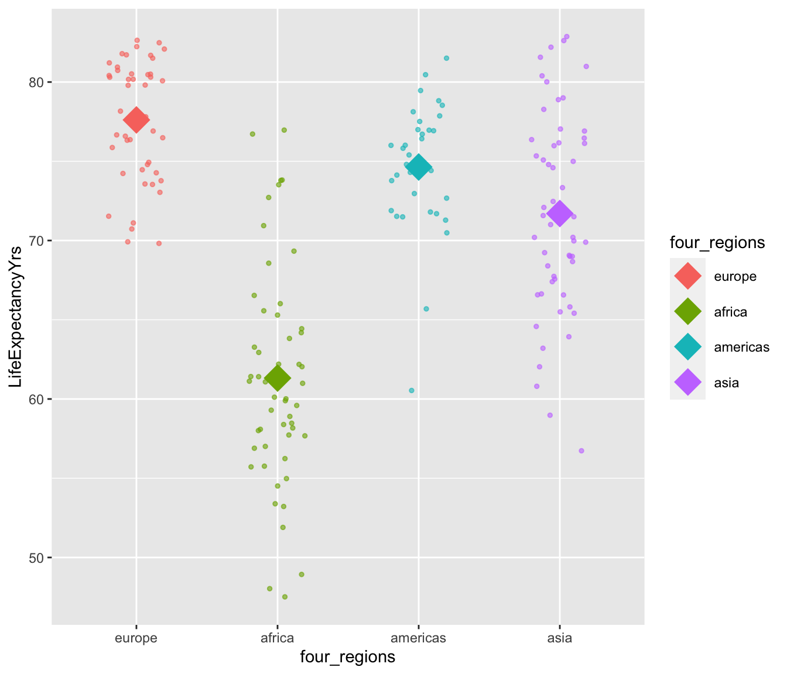

Categorical Covariates
Week 6
Learning Objectives
Let’s map that to our regression analysis process


Model Selection
Building a model
Selecting variables
Prediction vs interpretation
Comparing potential models
Model Fitting
Find best fit line
Using OLS in this class
Parameter estimation
Categorical covariates
Interactions
Model Evaluation
- Evaluation of model fit
- Testing model assumptions
- Residuals
- Transformations
- Influential points
- Multicollinearity
Model Use (Inference)
- Inference for coefficients
- Hypothesis testing for coefficients
- Inference for expected \(Y\) given \(X\)
Another way of thinking about SSY, SSR, and SSE
Topics
How to write out the regression equation
How to calculate & interpret the coefficients
Reference levels
- Changing the reference level
Running the model in R
Factor levels
Changing the reference level in R
Fitted values
Residuals
Different ways to “code” categorical variables
Reference cell coding
Effect coding
Chapter 12 prequel
Chapter 12 is on dummy variables, which I prefer to call indicator variables
It covers models that have both a continuous predictor and a categorical predictor
The book does not discuss models with just one categorical predictor from a regression perspective, which is what these notes cover
For this topic we will continue to use the 2011 Gapminder data with life expectancy as the numeric outcome, but world region (
four_regions) as the predictor: Africa, Americas, Asia, and Europe
Suggested resources
- Modern Dive Section 5.2
- https://moderndive.com/5-regression.html#model2
- Note that they are using a different Gapminder dataset than we are.
- Vu & Harrington (text from BSTA 511)
- Sections 6.3.3 & 7.5
Linear regression with one categorical explanatory variable

Linear regression with one categorical explanatory variable
- When using a categorical explanatory variable,
- we do NOT find a best-fit line.
- Instead we model the means of the outcome
- for the different levels of the categorical variable.

Regression equation (1/3)
Previously: simple linear regression
- Outcome variable = y = numerical variable
- Explanatory variable = x = numerical variable
The regression (best-fit) line is: \[\widehat{y} = \widehat{\beta}_0 + \widehat{\beta}_1 \cdot x \]
New: what if the explanatory variable is categorical?
Naively, we could write: \(\widehat{y} = \widehat{\beta}_0 + \widehat{\beta}_1 \cdot x\)
Or, with our variables: \[\widehat{\textrm{life expectancy}} = \widehat{\beta}_0 + \widehat{\beta}_1 \cdot \textrm{world regions} \]
- But what does
world regionsmean in this equation?
Regression equation (2/3)
- Since the categorical variable has multiple levels (categories),
- we need more variables in our equation to specify them.
- For this example, we have:
\[\widehat{\textrm{life expectancy}} = \widehat{\beta}_0 + \widehat{\beta}_1 \cdot Americas + \widehat{\beta}_2 \cdot Asia + \widehat{\beta}_3 \cdot Europe\]
Note that \(Africa\) is not in the equation!
- When interpreting this equation, the world region variables are replaced with 0 or 1,
- depending on which world region we are interpreting the regression for
- we call these variable indicators, or indicator functions
- textbook calls them dummy variables
\[Americas = \begin{cases} 1 & \text{if world region =} Americas \\ 0 & \text{else} \end{cases}\]
Regression equation (3/3)
\[\widehat{\textrm{life expectancy}} = \widehat{\beta}_0 + \widehat{\beta}_1 \cdot Americas + \widehat{\beta}_2 \cdot Asia + \widehat{\beta}_3 \cdot Europe\]
| World region | Regression equation for world region | Average Life Expectancy for world region |
|---|---|---|
| Africa | \(\widehat{y} = \widehat{\beta}_0 + \widehat{\beta}_1 \cdot 0 + \widehat{\beta}_2 \cdot 0 + \widehat{\beta}_3 \cdot 0\) | \(\widehat{y} = \widehat{\beta}_0\) |
| Americas | \(\widehat{y} = \widehat{\beta}_0 + \widehat{\beta}_1 \cdot 1 + \widehat{\beta}_2 \cdot 0 + \widehat{\beta}_3 \cdot 0\) | \(\widehat{y} = \widehat{\beta}_0 + \widehat{\beta}_1\) |
| Asia | \(\widehat{y} = \widehat{\beta}_0 + \widehat{\beta}_1 \cdot 0 + \widehat{\beta}_2 \cdot 1 + \widehat{\beta}_3 \cdot 0\) | \(\widehat{y} = \widehat{\beta}_0 + \widehat{\beta}_2\) |
| Europe | \(\widehat{y} = \widehat{\beta}_0 + \widehat{\beta}_1 \cdot 0 + \widehat{\beta}_2 \cdot 0 + \widehat{\beta}_3 \cdot 1\) | \(\widehat{y} = \widehat{\beta}_0 + \widehat{\beta}_3\) |

Interpretation of regression equation coefficients
| Coefficient | Interpretation |
|---|---|
| \(\widehat{\beta}_0\) | = mean life expectancy of Africa |
| \(\widehat{\beta}_1\) | = difference in mean life expectancies of the Americas and Africa |
| \(\widehat{\beta}_2\) | = difference in mean life expectancies of Asia and Africa |
| \(\widehat{\beta}_3\) | = difference in mean life expectancies of Europe and Africa |

(Manually) calculate coefficient values
\[\widehat{\textrm{life expectancy}} = \widehat{\beta}_0 + \widehat{\beta}_1 \cdot Americas + \widehat{\beta}_2 \cdot Asia + \widehat{\beta}_3 \cdot Europe\]

| four_regions | life_ave | Difference with Africa |
|---|---|---|
| africa | 61.3 | 0.0 |
| americas | 74.6 | 13.3 |
| asia | 71.7 | 10.4 |
| europe | 77.6 | 16.3 |
See code file for code that created the table above and equation below.
\[\widehat{\textrm{life expectancy}} = 61.3+ 13.3 \cdot Americas + 10.4 \cdot Asia + 16.3 \cdot Europe\]
Reference levels
Why is Africa not one of the variables in the regression equation?
\[\widehat{\textrm{life expectancy}} = \widehat{\beta}_0 + \widehat{\beta}_1 \cdot Americas + \widehat{\beta}_2 \cdot Asia + \widehat{\beta}_3 \cdot Europe\]
Categorical variables have to have at least 2 levels. If they have 2 levels, we call them binary.
We choose one of the levels as our reference level to which all other levels of the categorical variable are compared to.
- The levels \(Americas, Asia, Europe\) are compared to the level \(Africa\)
The intercept of the regression equation is the mean of the outcome restricted to the reference level. (unless we use effect coding - see later slides)
- Recall that the intercept is the mean life expectancy of Africa, which was our reference level.
If the categorical variable has k levels, then we need k-1 variables to model it!
Reference levels example: Change the reference level to Europe (1/2)
Suppose we want to compare the mean life expectancies of world regions to the \(Europe\) level instead of \(Africa\).
- Below is the regression equation for when \(Africa\) is the reference level.
\[\widehat{\textrm{life expectancy}} = \widehat{\beta}_0 + \widehat{\beta}_1 \cdot Americas + \widehat{\beta}_2 \cdot Asia + \widehat{\beta}_3 \cdot Europe\] * Update the variables to make \(Europe\) the reference level:
\[\widehat{\textrm{life expectancy}} = \widehat{\beta}_0 + \widehat{\beta}_1 \cdot Africa + \widehat{\beta}_2 \cdot Americas + \widehat{\beta}_3 \cdot Asia\]
Reference levels example: Change the reference level to europe (2/2)
- Now update the coefficients of the regression equation using the output below.
| four_regions | life_ave | Difference with Europe |
|---|---|---|
| africa | 61.3 | -16.3 |
| americas | 74.6 | -3.0 |
| asia | 71.7 | -5.9 |
| europe | 77.6 | 0.0 |
\[\widehat{\textrm{life expectancy}} = 77.6+ -16.3 \cdot Africa + -3 \cdot Americas + -5.9 \cdot Asia\]
R: Regression table with lm() function
model1 <- lm(LifeExpectancyYrs ~ four_regions, data = gapm2)
tidy(model1) %>% gt()| term | estimate | std.error | statistic | p.value |
|---|---|---|---|---|
| (Intercept) | 61.32037 | 0.764059 | 80.256072 | 1.437742e-144 |
| four_regionsamericas | 13.31786 | 1.229218 | 10.834425 | 1.893717e-21 |
| four_regionsasia | 10.38148 | 1.080543 | 9.607656 | 5.941041e-18 |
| four_regionseurope | 16.28852 | 1.133283 | 14.372866 | 7.595828e-32 |
\[\widehat{\textrm{life expectancy}} = 77.6+ -16.3 \cdot Americas + -3 \cdot Asia + -5.9 \cdot Europe\]
Which world region did R choose as the reference level?
How you would calculate the mean life expectancies of world regions using only the results from the regression table?
R: Change reference level to europe (1/2)
four_regionsdata type is currentlycharacter- check this withstr()
str(gapm2$four_regions) chr [1:187] "asia" "europe" "africa" "europe" "africa" "americas" ...- In order to change the reference level, we need to convert it to data type
factor
gapm2 <- gapm2 %>%
mutate(four_regions = factor(four_regions))
str(gapm2$four_regions) Factor w/ 4 levels "africa","americas",..: 3 4 1 4 1 2 2 4 3 4 ...levels(gapm2$four_regions) # order of factor levels[1] "africa" "americas" "asia" "europe" R: Change reference level to europe (2/2)
- Now change the order of the factor levels
- Code below uses
fct_relevel()from theforcatspackage that gets loaded as a part of thetidyverse - Any levels not mentioned will be left in their existing order, after the explicitly mentioned levels.
gapm2 <- gapm2 %>%
mutate(four_regions =
fct_relevel(four_regions, "europe"))
levels(gapm2$four_regions)[1] "europe" "africa" "americas" "asia" R: Run model with europe as the reference level
levels(gapm2$four_regions)[1] "europe" "africa" "americas" "asia" model2 <- lm(LifeExpectancyYrs ~ four_regions, data = gapm2)
tidy(model2) %>% gt()| term | estimate | std.error | statistic | p.value |
|---|---|---|---|---|
| (Intercept) | 77.608889 | 0.8369847 | 92.724387 | 9.026023e-156 |
| four_regionsafrica | -16.288519 | 1.1332826 | -14.372866 | 7.595828e-32 |
| four_regionsamericas | -2.970654 | 1.2758264 | -2.328415 | 2.098282e-02 |
| four_regionsasia | -5.907037 | 1.1332826 | -5.212325 | 5.002066e-07 |
\[\widehat{\textrm{life expectancy}} = \widehat{\beta}_0 + \widehat{\beta}_1 \cdot Africa + \widehat{\beta}_2 \cdot Americas + \widehat{\beta}_3 \cdot Asia\]
Fitted values & residuals
Similar to as before:
Observed values \(y\) are the values in the dataset
Fitted values \(\widehat{y}\) are the values that
fall on the best-fit line for a specific value of xare the means of the outcome stratified by the categorical predictor’s levelsResiduals \(y - \widehat{y}\) are the differences between the two.

Fitted values
regression_points <- augment(model1)ggplot(regression_points,
aes(x = four_regions,
y = .fitted)) +
geom_point()
ggplot(regression_points,
aes(x = four_regions,
y = .fitted)) +
geom_jitter()
Residual plots
ggplot(regression_points,
aes(x=.resid)) +
geom_histogram()`stat_bin()` using `bins = 30`. Pick better value with `binwidth`.
ggplot(regression_points,
aes(y=.resid)) +
geom_boxplot()
Different ways to code categorical variables
- Reference cell coding
- Intercept is the mean of the outcome variable for the reference level of the categorical variable
- k-1 levels are coded as 0, 1
| World region | Var: Americas | Var: Asia | Var: Europe |
|---|---|---|---|
| Africa (ref) | 0 | 0 | 0 |
| Americas | 1 | 0 | 0 |
| Asia | 0 | 1 | 0 |
| Europe | 0 | 0 | 1 |
- Effect coding: categorical variables
- Intercept is the mean of the k levels’ means of the outcome variable
- This is the same as the overall mean if each of the levels has the same sample size
- k-1 levels are coded as -1, 0, 1
| World region | Var: Americas | Var: Asia | Var: Europe |
|---|---|---|---|
| Africa (ref) | -1 | -1 | -1 |
| Americas | 1 | 0 | 0 |
| Asia | 0 | 1 | 0 |
| Europe | 0 | 0 | 1 |
Regression equation with effect coding
\[\widehat{\textrm{life expectancy}} = \widehat{\beta}_0 + \widehat{\beta}_1 \cdot Americas + \widehat{\beta}_2 \cdot Asia + \widehat{\beta}_3 \cdot Europe\]
| World region | Regression equation for world region | Average Life Expectancy for world region |
|---|---|---|
| Africa | \(\widehat{y} = \widehat{\beta}_0 + \widehat{\beta}_1 \cdot (-1) + \widehat{\beta}_2 \cdot (-1) + \widehat{\beta}_3 \cdot (-1)\) | \(\widehat{y} = \widehat{\beta}_0 - \widehat{\beta}_1 - \widehat{\beta}_2 - \widehat{\beta}_3\) |
| Americas | \(\widehat{y} = \widehat{\beta}_0 + \widehat{\beta}_1 \cdot 1 + \widehat{\beta}_2 \cdot 0 + \widehat{\beta}_3 \cdot 0\) | \(\widehat{y} = \widehat{\beta}_0 + \widehat{\beta}_1\) |
| Asia | \(\widehat{y} = \widehat{\beta}_0 + \widehat{\beta}_1 \cdot 0 + \widehat{\beta}_2 \cdot 1 + \widehat{\beta}_3 \cdot 0\) | \(\widehat{y} = \widehat{\beta}_0 + \widehat{\beta}_2\) |
| Europe | \(\widehat{y} = \widehat{\beta}_0 + \widehat{\beta}_1 \cdot 0 + \widehat{\beta}_2 \cdot 0 + \widehat{\beta}_3 \cdot 1\) | \(\widehat{y} = \widehat{\beta}_0 + \widehat{\beta}_3\) |

(Manually) calculate coefficient values with effect coding
\[\widehat{\textrm{life expectancy}} = \widehat{\beta}_0 + \widehat{\beta}_1 \cdot Americas + \widehat{\beta}_2 \cdot Asia + \widehat{\beta}_3 \cdot Europe\]
The mean of all 4 regions’ mean life expectancy is 71.3 years.

| four_regions | life_ave | Difference with mean of means |
|---|---|---|
| africa | 61.3 | -10.0 |
| americas | 74.6 | 3.3 |
| asia | 71.7 | 0.4 |
| europe | 77.6 | 6.3 |
See code file for code that created the table above & equation below.
\[\widehat{\textrm{life expectancy}} = 71.3+ 3.3 \cdot Americas + 0.4 \cdot Asia + 6.3 \cdot Europe\]
Example: regression equation with effect coding
\[\widehat{\textrm{life expectancy}} = 71.3+ 3.3 \cdot Americas + 0.4 \cdot Asia + 6.3 \cdot Europe\]
| World region | Regression equation for world region | Average Life Expectancy for world region |
|---|---|---|
| Africa | \(\widehat{y} = 71.3 + 3.3 (-1) + 0.4 (-1) + 6.3 (-1)\) | \(\widehat{y} = 71.3 - 3.3 - 0.4 - 6.3 = 61.3\) |
| Americas | \(\widehat{y} = 71.3 + 3.3 \cdot 1 + 0.4 \cdot 0 + 6.3 \cdot 0\) | \(\widehat{y} = 71.3 + 3.3 = 74.6\) |
| Asia | \(\widehat{y} = 71.3 + 3.3 \cdot 0 + 0.4 \cdot 1 + 6.3 \cdot 0\) | \(\widehat{y} = 71.3 + 0.4= 71.7\) |
| Europe | \(\widehat{y} = 71.3 + 3.3 \cdot 0 + 0.4 \cdot 0 + 6.3 \cdot 1\) | \(\widehat{y} = 71.3 + 6.3= 77.6\) |

Model in R with effect coding (brute force way)
- Create variables with the -1, 0, 1 values
gapm2 <- gapm2 %>%
mutate(
americas_eff = case_when(
four_regions == "americas" ~ 1,
four_regions == "africa" ~ -1,
TRUE ~ 0 # all other cases
),
asia_eff = case_when(
four_regions == "asia" ~ 1,
four_regions == "africa" ~ -1,
TRUE ~ 0 # all other cases
),
europe_eff = case_when(
four_regions == "europe" ~ 1,
four_regions == "africa" ~ -1,
TRUE ~ 0 # all other cases
)
)gapm2 %>% tabyl(americas_eff, four_regions) %>% gt()| americas_eff | europe | africa | americas | asia |
|---|---|---|---|---|
| -1 | 0 | 54 | 0 | 0 |
| 0 | 45 | 0 | 0 | 54 |
| 1 | 0 | 0 | 34 | 0 |
gapm2 %>% tabyl(asia_eff, four_regions) %>% gt()| asia_eff | europe | africa | americas | asia |
|---|---|---|---|---|
| -1 | 0 | 54 | 0 | 0 |
| 0 | 45 | 0 | 34 | 0 |
| 1 | 0 | 0 | 0 | 54 |
gapm2 %>% tabyl(europe_eff, four_regions) %>% gt()| europe_eff | europe | africa | americas | asia |
|---|---|---|---|---|
| -1 | 0 | 54 | 0 | 0 |
| 0 | 0 | 0 | 34 | 54 |
| 1 | 45 | 0 | 0 | 0 |
Model in R with effect coding (brute force way)
model3 <- lm(LifeExpectancyYrs ~ americas_eff + asia_eff + europe_eff,
data = gapm2)
tidy(model3) %>% gt()| term | estimate | std.error | statistic | p.value |
|---|---|---|---|---|
| (Intercept) | 71.3173366 | 0.4179792 | 170.6241472 | 1.183922e-203 |
| americas_eff | 3.3208987 | 0.7989377 | 4.1566430 | 4.954854e-05 |
| asia_eff | 0.3845153 | 0.6830810 | 0.5629131 | 5.741830e-01 |
| europe_eff | 6.2915523 | 0.7245538 | 8.6833472 | 2.096464e-15 |
\[\widehat{\textrm{life expectancy}} = 71.3+ 3.3 \cdot Americas + 0.4 \cdot Asia + 6.3 \cdot Europe\]
- Note that all three of the effect coded variables we created need to be specified in the model, instead of the one
four_regionsvariable - How you would calculate the mean life expectancies of world regions using only the results from the regression table?
Model in R with effect coding using contrasts
- Contrasts are used to tell R what “coding system” we want to use when testing hypotheses
Reference cell coding is the default type of coding used by R
# 1st level is all 0's
contr.treatment(4) 2 3 4
1 0 0 0
2 1 0 0
3 0 1 0
4 0 0 1Effect coding: note that R assigns the -1 values to the last level instead of the first level
# 4th level is all -1's
contr.sum(4) [,1] [,2] [,3]
1 1 0 0
2 0 1 0
3 0 0 1
4 -1 -1 -1Reorder levels so that Africa is last
- Doing this so that R’s
lm()output is consistent with what we calculated on previous slides when using effect coding - R will assign -1 values to the last level of the categorical variable
levels(gapm2$four_regions)[1] "europe" "africa" "americas" "asia" gapm2 <- gapm2 %>%
mutate(four_regions_africa_last =
fct_relevel(four_regions, "americas", "asia", "europe", "africa"))
levels(gapm2$four_regions_africa_last)[1] "americas" "asia" "europe" "africa" gapm2 %>% tabyl(four_regions, four_regions_africa_last) four_regions americas asia europe africa
europe 0 0 45 0
africa 0 0 0 54
americas 34 0 0 0
asia 0 54 0 0Model in R with effect coding using contrasts
model3 <- lm(LifeExpectancyYrs ~ four_regions_africa_last,
contrasts = list(four_regions_africa_last = contr.sum(4)),
data = gapm2)
tidy(model3) %>% gt()| term | estimate | std.error | statistic | p.value |
|---|---|---|---|---|
| (Intercept) | 71.3173366 | 0.4179792 | 170.6241472 | 1.183922e-203 |
| four_regions_africa_last1 | 3.3208987 | 0.7989377 | 4.1566430 | 4.954854e-05 |
| four_regions_africa_last2 | 0.3845153 | 0.6830810 | 0.5629131 | 5.741830e-01 |
| four_regions_africa_last3 | 6.2915523 | 0.7245538 | 8.6833472 | 2.096464e-15 |
Regression equation we computed based on group means:
\[\widehat{\textrm{life expectancy}} = 71.3+ 3.3 \cdot Americas + 0.4 \cdot Asia + 6.3 \cdot Europe\]
Reference cell coding vs. effect coding
- Reference cell coding
- R’s default for regression
- Effect coding
- This is what one-way ANOVA is from a regression point of view
- See Section 17.4.2 of textbook
- This is what one-way ANOVA is from a regression point of view
- Different statistical software packages have different defaults.
- Important to know what the default is!!
See https://stats.oarc.ucla.edu/r/library/r-library-contrast-coding-systems-for-categorical-variables/ for more on different ways to code categorical variables in R